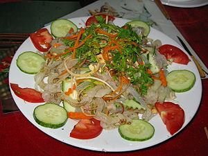

Cùng bắt tay làm thử thôi nào!
Vật liệu: 200g sứa muối, thái sợi, xả nước nhiều lần cho hết chất mặn; 150g ức gà (hoặc thịt heo lạc) luộc xé sợi; 50g chả lụa, thái sợi; 20g đậu phộng rang; 200g dưa leo, cắt khúc, dùng dao lạng tròn, cuộn lại, thái mỏng; 100g cà rốt đã thái sợi; 100g củ cải trắng thái sợi; rau mùi ngò; húng cây; chanh; đường; ớt thái sợi và nước mắm chua ngọt.
Cách Làm: Trộn sứa, chả lụa, thịt gà (hoặc heo), dưa chuột, cà rốt, củ cái trắng, húng, mùi, ớt sợi, nước mắm chua ngọt, đậu phộng rang. Cho ra đĩa bỏ mùi ngò rau thơm lên trên. Dùng với nước mắm chanh ớt và bánh phồng tôm